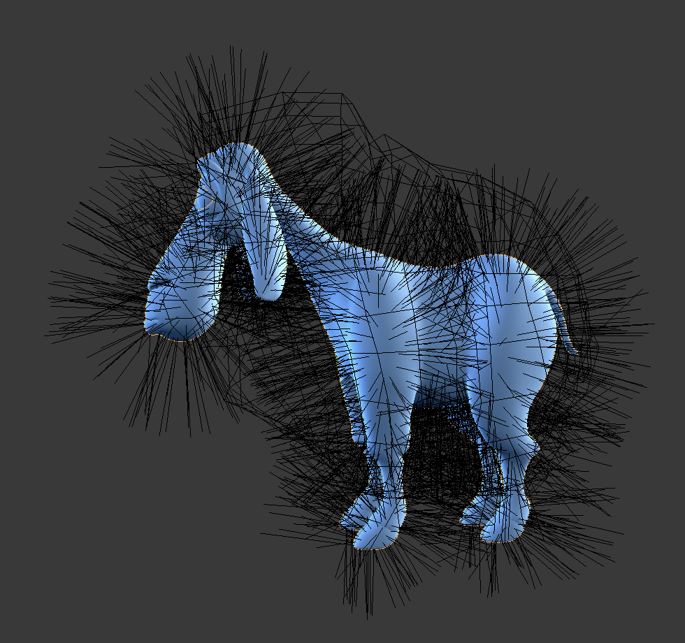

粒子编辑模式¶
使用 粒子系统编辑模式 编辑关键点 (关键帧) 和 路径 烘焙 毛发, 粒子, 布料, 和 软体 模拟器. (烘焙前你可以编辑毛发的造型。)
Since working in Particle Edit Mode is pretty easy and very similar to working with vertices in the 3D Viewport, we will show how to set up a particle system and then give a reference of the various functions.
用法¶
粒子，布料，软体模拟的设置¶
使用 毛发 粒子，或布料/软体模拟。
通过设置对象或发射器来创建模拟，设置您的时间范围(如果您刚刚开始并尝试，请使用小范围)，使用 Alt-A 预览来模拟设置。
编辑模拟¶
从 3D视图 标题栏的 模式选择菜单 切换到 粒子编辑 ，以编辑粒子的路径/关键帧。您可能需要在3D视图中按下 T 以查看 粒子编辑 面板。移动到要编辑的帧，然后使用各种 粒子编辑 工具编辑模拟。 使用 Alt-A 缓慢预览更改，并经常保存，以防意外发生或当不喜欢所做的最新更改，可以回到之前的版本。
Tip
为了更清楚的看到你在做什么：
在工具栏中打开选项面板。
Select Point select mode (see below) in the header of the 3D Viewport. This will display key points along the particle path.
选择¶
单选： LMB.
全选: A.
链接：移动鼠标在关键点上按 L.
框选: B.
根部/尖端: .
你还可以使用 选择 菜单。
Tip
选择
选择对于仅修改所需的粒子非常有用。将鼠标悬停在粒子路径上并按下 L 以进行链接选择，将鼠标悬停在下一个上，然后按 L 将该路径添加到选择中。要删除路径，请按住 Shift 并按 L 。取消选择所有按下 A 。
选择单个点的方法与编辑模式中的方法相同。 RMB 选择， Shift-RMB 加/减选。
随机选择¶
随机选择粒子。
- 百分比
按百分比随机选择。
- 随机种子
随机选择的可选种子。
- 操作
随机选择或者取消选择粒子。
- 类型
选择毛发或点。这里的这些属于可能会令人困惑，因为毛发/点不是指粒子类型，而是指毛发/粒子的路径/点。
笔刷¶
参考
- 模式
粒子编辑模式
- Tool
点击 “梳子” 按钮选择需要的工具集。
- 无
没有指定工具，只作为 “普通” 顶点编辑关键帧。
- 梳子
移动关键点(类似于比例编辑工具)。
- 平滑
平行视觉相邻的细分。
- 添加
添加新粒子。
- 计数
每步的新粒子数。
- 插入
从现有的毛发中插入新毛发的形状。
- 步数
梳子步骤的数量。
- 关键帧
制作新粒子的关键帧数量。
- 长度
缩放部分，使毛发的长度不再 增长 或 变短的 收缩。
- 喷发
围绕第一个关键点(根)旋转毛发，使毛发 添加 后立起来或者到 减少 后平压。
- 体积喷发
应用喷发到未选择的终点，(帮助在膨胀根步时保持毛发量)
- 切断
缩放段直到最后一个关键点到达画笔。
- 权重
这对于软体动画特别有用，因为权重定义了软体的 目标。一个关键点的权重为1将不能移动，权重为0的关键点完全是软体动画。该值按照强度 最小 至 最大 的软体目标范围缩放。
选项¶
参考
- 模式
粒子编辑模式
- 面板
- 偏转发射器
仅限毛发粒子--不要通过发射网格移动关键点。
- 距离
与发射器保持距离。
- 保持
- 长度
在梳理或平滑头发时，保持关键点之间的片段长度。这是通过移动所有其他关键点来完成的。
- 根
保持第一个关键点不变，这就不能移动毛发了。
- 矫正
- 速度
根据编辑的路径重新计算粒子的速度。否则，无论粒子移动的实际距离如何，原始速度值都保持不变。
- X 镜像
在本地X轴上启用镜像编辑。
- 对象形状
一个网格对象，其边界由 形状切割 工具使用。
- 形状切割
此修饰工具将毛发修剪为由 形状对象 定义的形状。与使用切割工具相比，这是避免突出毛发部分延长的更快方法。它适用于具有大量毛发的角色，使用切割工具在单个平面中工作变得乏味。

之前。¶ |

之后。¶ |
视图显示¶
- 路径步骤
用于绘制路径的步骤数；改善了粒子路径的平滑度。
- 粒子
显示路径顶部的实际粒子。
- 淡出时间
淡出远离当前时间的路径和关键点。
- 帧
多少帧参与淡出。
- 显示子集
也显示粒子的子集，这允许微调粒子并查看它们对结果的影响，但如果有许多的子集，可能会降低系统运行的速度。
编辑¶
移动关键点或粒子¶
要移动选定的关键点，请按 G 或使用其他各种方法之一移动顶点。
要移动粒子根，您必须关闭工具栏中的 保持根 。
可以执行许多操作，例如顶点，包括缩放，旋转和移除(完整粒子或单个键)。
可能无法复制或挤出键或粒子，但可以细分添加新关键点的 。
可选，可以重新键入粒子 。
显示毛发和粒子路径的平滑程度取决于 工具栏中的 路径步骤 设置。低设置会在点之间产生块状插值，而高设置会产生平滑的曲线。
镜像¶
参考
- 模式
粒子编辑模式
- 菜单
如果要创建X轴对称修发，则必须执行以下步骤：
选择所有粒子 A.
镜像粒子在 .
在 打开 X 镜像。
镜像后两个粒子可能会占据几乎相同的位置。由于这会浪费内存和渲染时间，因此可以使用 粒子 菜单中的 按距离合并。
显示/隐藏¶
参考
- 模式
粒子编辑模式
- 菜单
Hiding and unhiding of particles works similar as with vertices in the 3D Viewport. Select one or more keypoints of the particle you want to hide and press H. The particle in fact does not vanish, only the key points.
隐藏的粒子(即隐藏关键点的粒子)不会对各种画笔产生反应。但：
如果使用 镜像编辑，即使移动了镜像对应物，也可以移动具有隐藏关键点的粒子。
要取消隐藏所有隐藏的粒子 Alt-H。